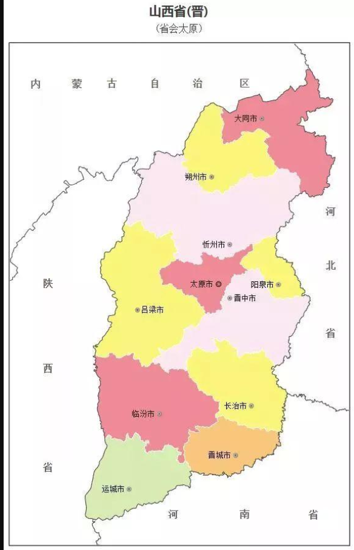
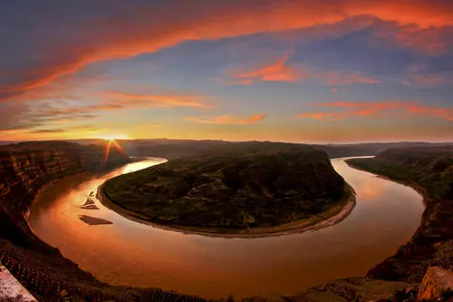
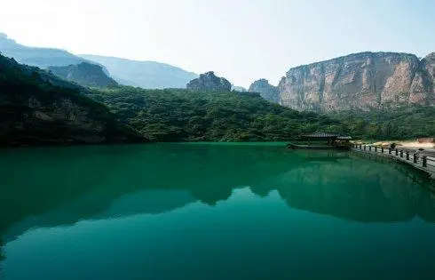

-山
西
省-
-----------
^
^-----------
山西简介：山西，简称“晋”，中华人民共和
国省级行政区，省会太原，位于中国华北，东与河北为邻，
西与陕西相望，南与河南接壤，北与内蒙古毗连，介于
北纬34°34′—40°44′，东经110°14′—114°33′之间，总面积
15.67万平方千米。山西省地势呈东北斜向西南的平行四边形，
是典型的为黄土覆盖的山地高原，地势东北高西南低。高原内部
起伏不平，河谷纵横，地貌有山地、丘陵、台地、平原，山区面积占总面积的80.1%。
山西省地跨黄河、海河两大水系，河流属于自产外流型水系。山西省地处中纬度地带的内陆，
属温带大陆性季风气候.截至2020年4月，山西省共辖11个地级市，市辖区26个、县级市11个
、县80个 ，常住人口3729.22万人，实现地区生产总值（GDP）17026.68亿元，其中，第一产
业增加值824.72亿元，第二产业增加值7453.09亿元，第三产业增加值8748.87亿元，人均地
区生产总值45724元。
历史背景：山西省自古就有人类活动的迹象，并为中华文明的发源地之一。
考古表明，远古时代，山西南部是人类初曙的起源地。运城垣曲县“世纪曙猿”化石的发现，
把类人猿出现的时间向前推进了1000万年。约在180万年前的旧石器时代，原始人群就在山西晋南
地区繁衍生息，其中运城芮城县西侯度文化遗址发现的火烧骨，把中国范围内发现的人类用火历史向
前推进了100万年；约在10—2万年以前的旧石器时代中期，在山西汾河两岸和大同、朔州一带，已出
现比较集中的原始人群和村落。新石器时代晚期，山西南部已经成为当时诸多邦国的中心。对临汾襄汾
县陶寺遗址发现和研究成果表明，这里是帝尧都城所在地，也是最早的中国所在区域。这使大致在距今4
500年前后中国史前传说的尧舜禹时代由传说成为信史，中华5000年文明史由此得到证实。
地形地貌：山西省地处华北西部的黄土高原东翼，地貌从总体来看是一个被黄土广泛覆盖的山地高原，整个轮廓略呈由东
北斜向西南的平行四边形。地貌类型复杂多样，有山地、丘陵、高原、盆地、台地等，其中山地、丘陵占80%，
高原、盆地、台地等平川河谷占20%。大部分地区海拔在1000米以上，与其东部华北大平原相对比，呈现为强
烈的隆起形势。最高处为东北部的五台山叶头峰，海拔达3058米，是华北最高峰；最低处为南部边缘运城垣曲
县东南西阳河入黄河处，海拔仅180米。境域地势高低起伏异常显著。
山西省总的地势是“两山夹一川”，东西两侧为山地和丘陵隆起，中部为一列串珠式盆地沉陷，平原分布其间。东部是以太行山为主
脉形成的块状山地，由北往南主要有恒山、句注山、五台山、系舟山、太行山、太岳山和中条山脉及其所属的历山、析城山等
，其山势挺拔雄伟，海拔在1500米以上。西部是以吕梁山为主干的黄土高原，自北向南分布有七峰山、洪涛山和吕梁山脉所属的管
涔山、芦芽山、云中山、黑茶山、关帝山、紫荆山、龙门山等主要山峰，海拔多在1500米以上，关帝山海拔最高达2831米。由北而
南珠串着彼此相隔的雁北、忻州、太原、吕梁、阳泉、长治、晋城、临汾、运城九大“多”字形断陷盆地 。全省主体轮廓
很像一个“凹”字形。
位置境域：山西省是中国内陆省份，位于黄河中游东岸，华北平原西面的黄土高原上。东以太行山为界，与河北为邻；西、南隔黄河与陕西、
河南相望；北以外长城为界与内蒙古毗连。疆域轮廓呈东北斜向西南的平行四边形，南北间距较长，纵长约682千米：最南端在芮
城县南张村南，北纬34°34′；最北端在天镇县远头村北，北纬40°44′。东西间距较短，宽约385千米：最东端在广灵县南坑村东，
东经114°33′；最西端在永济市长旺村西，东经110°14′。全省总面积15.67万平方千米，占中国总面积的1.6%。
——山西地图——
“一个平行四边形”

——山西美景——


——山西美食——
回到顶部
版权所有©华北科技学院